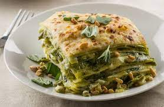

Pesto Lasagna

Scrumptious lasagna with basil pesto, spinach and plenty of bubbly cheese
A simple White Pesto Lasagna for these days in between Christmas and New Years…simply the BEST. Layers of creamy cheese bechamel sauce with basil pesto and spinach. This dinner is always a favorite with our family, who are all in town right now for the holidays. It’s a great meal for entertaining, just make it ahead of time, and bake it off before guests arrive. Serve with a big bright salad!
Ingredients:
- 2 tablespoons EVOO
- 4 tablespoons salted butter
- 1 chopped shallot
- 3 cloves garlic, smashed
- 2 teaspoons dried thyme
- 1 teaspoon dried rosemary
- salt and black pepper
- 1/4th cup flour
- 2 cups whole milk
- 2 cubs vegetable broth
- 2 cups shredded provolone cheese
- 1 cup grated parmesan cheese
- 1 1/2 cup basil pesto
- 10 ounces frozen spinach
- 1 box lasagna noodles
- Preheat oven to 375 farenheit. Grease lasagna dish
- In saucepan, melt together oil and butter. Add shallots
garlic, thyme, rosemary, chili flakes, salt, and pepper. Cook until fragrant.
- Whisk in flour and cook. Add milk and broth Bring to a boil and stir for 2-3 minutes. Remove from the heat and stir in the provolone and 1/2 cup of parmesan cheese. Stir until the cheese is fully melted and the sauce is smooth.
- To assemble, spread 1/4 of the cheese sauce into the bottom of the prepared baking dish. Top with 3-4 lasagna sheets. Spread with 1/2 the pesto and sprinkle over some spinach. Add another 1/4 of the cheese sauce. Place another 3-4 lasagna noodles on top, add the remaining pesto, spinach and then another 1/4 of the cheese sauce, sprinkle over the remaining spinach. Layer the remaining lasagna noodles and pour the remaining cheese sauce over top. Top with a 1/2 cup of parmesan cheese.
- Bake, covered, for 30 minutes or until the cheese is bubbling. Uncover and bake another 15 minutes, until the cheese is browned. Let stand 10 minutes before serving.